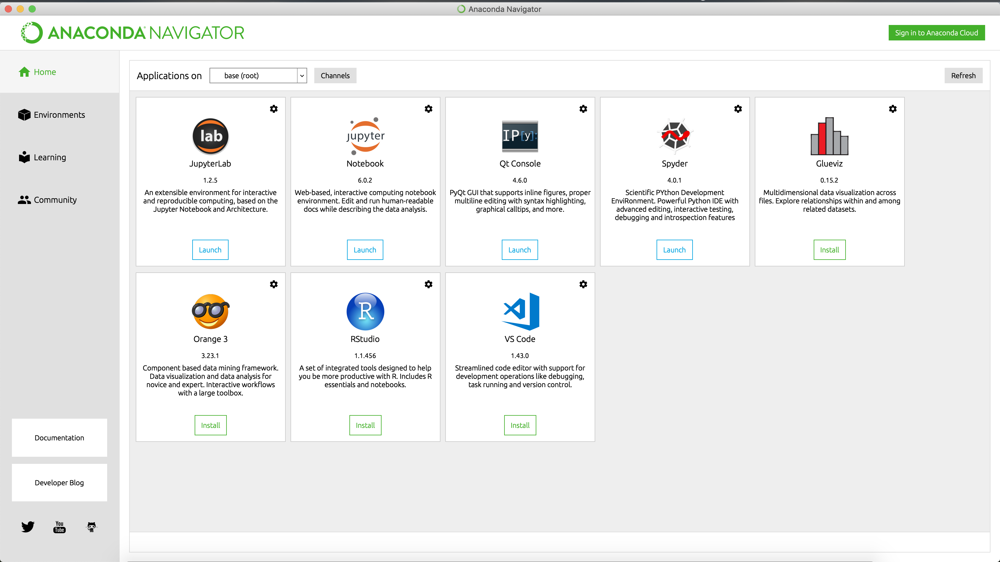
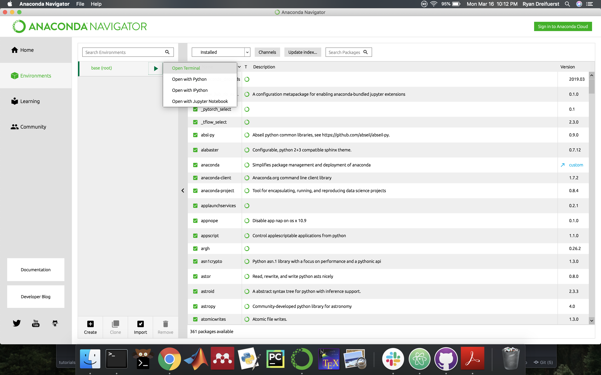
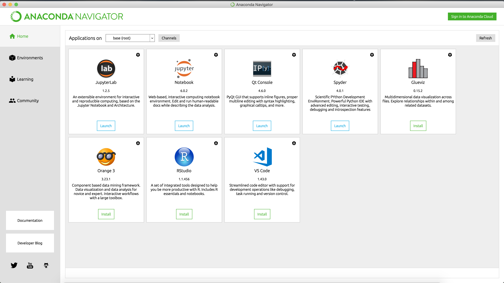
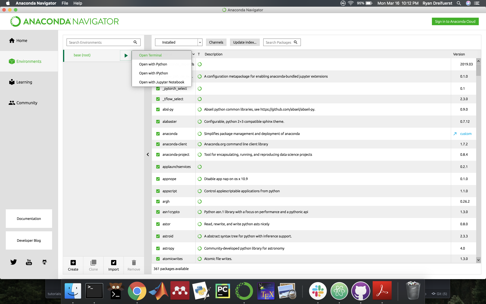

Getting Started with Python
Downloading Anaconda
Anaconda is a commonly used application which provides a ton of programs for getting started and working in Python. It serves as a tool for managing your environment, packages, and includes software like jupyter notebooks and Glueviz. We will not be getting too deep into using anaconda, but if you want to learn more, head over to anaconda.com and look at their tutorials.Lets start by downloading anaconda. Make sure to choose the Python 3.x one, not the python 2 one. Once you download it, go through the installation by clicking continue and accept whenever prompted. It may ask if you want to install pycharm, just click continue, you do not need pycharm, since we will work exclusively with jupyter notebooks for now. Once you have completed this, you will have anaconda installed, and the application you will use to get started is called anaconda navigator which you can see to the right. ---->
Now that it is installed, lets open up navigator and see what we can do. You should see a window similar to mine, which shows a number of tools, the most useful for us will be the jupyter notebook, which is the second or third application. Jupyter notebooks are ideal for sharing information because it lets you run code and show the outputs all in a "notebook", hence the name.
Before we open up a jupyter notebook and get to coding, we first need to install any of the libraries that we will use. For now lets just work with the base environment, although for a real project you would have a seperate environment. Click on the environments tab on the left side of the screen. You will see a large list on the right which has your packages. We want to install numpy, matplotlib, pandas, and scikit-learn. We will use the command line interface, which can be intimidating but is actually very easy to use.
Start by clicking on the arrow next to base(root) in the first column and selecting open terminal. Now you will see a terminal window open, which is just a way to type commands to your computer. There are a few commands to run to install and update your packages.
conda install numpy
conda install matplotlib
conda install pandas
conda install scikit-learn
conda update --all
You can copy and paste each line of code into the terminal and press enter to run it.
It may ask you something which ends in "would you like to install [y/n]?". Just type "y" and press
enter to continue installation. The first four simply install the packages, while the last command
ensures that all of your packages are up to date, which will take longer than the other parts
and will write a lot of text letting you know all of the components being updated. After the text stops
flying by, you can close and terminate the terminal window.
Download this notebook, which allows you to work with the code and walk through it. It also provides some exercises at the end to test if you understand the content. Go back to the Anaconda Navigator homepage, and launch a jupyter notebook. That will open another terminal window, which you can ignore, and open your browser to a local jupyter notebook that shows your file system. Navigate to where you downloaded the notebook and open it. You will be able to see the code and information I have written and play with any parts you would like to. Now lets get to coding!
 Opening Anaconda Navigator

Anaconda Navigator Homepage

Opening a terminal from Anaconda environments
Opening Anaconda Navigator

Anaconda Navigator Homepage

Opening a terminal from Anaconda environments